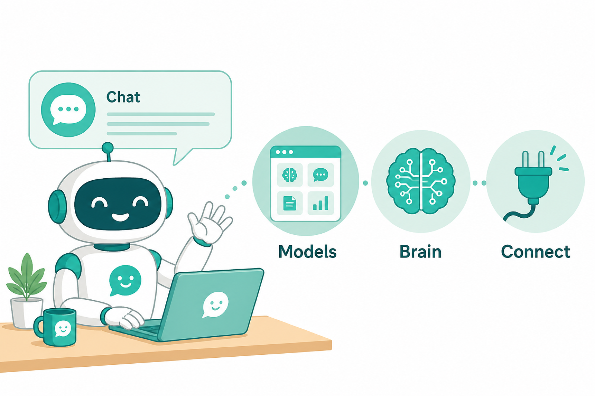
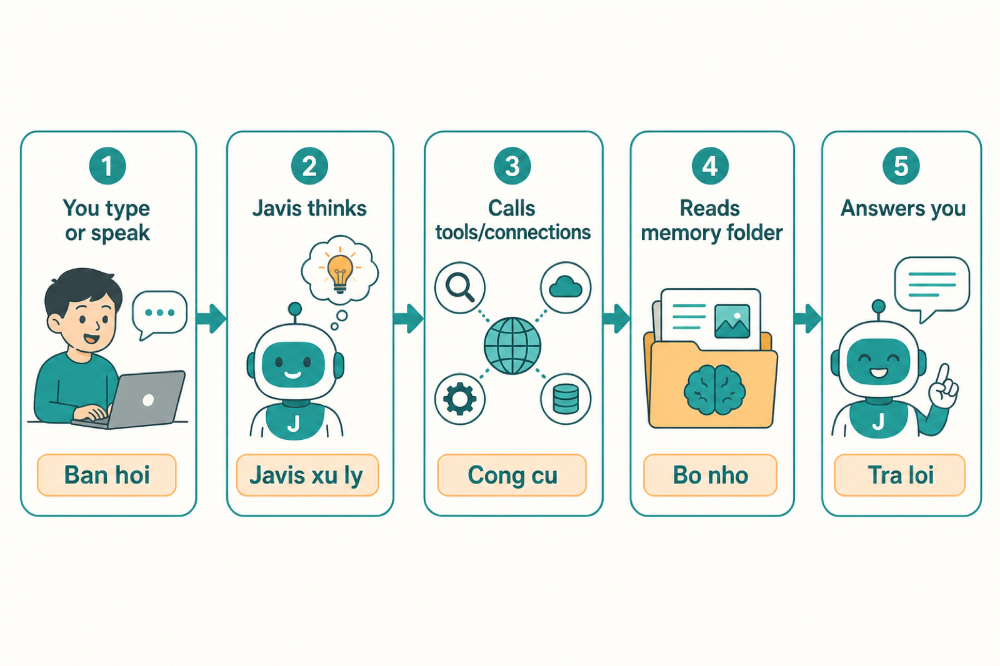
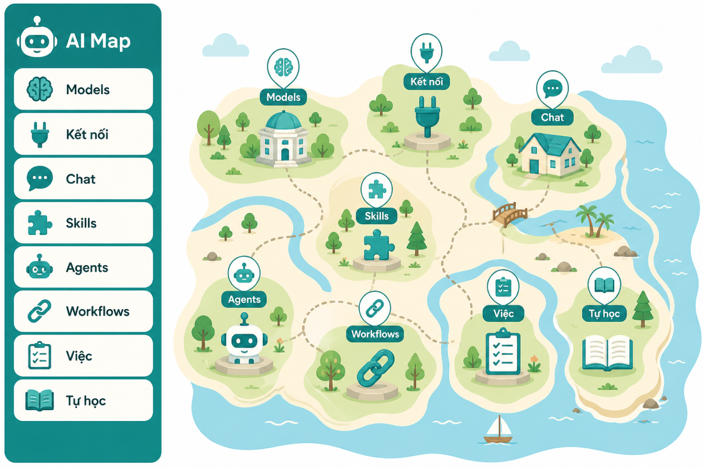
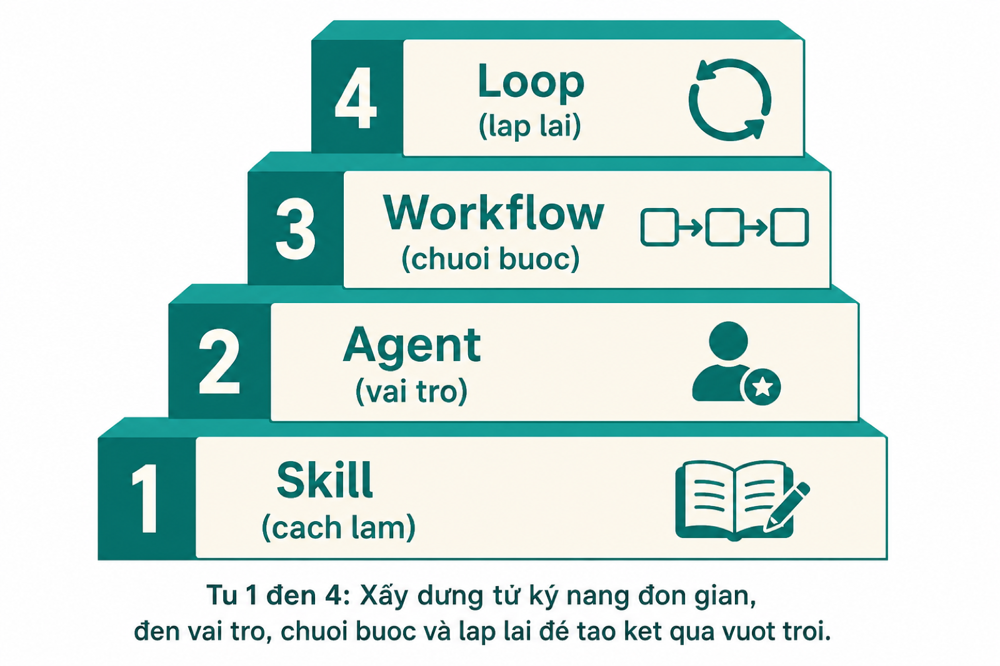

Hãy nghĩ Javis như một trợ lý trên máy tính của bạn:
Bạn hỏi bằng chữ hoặc giọng nói
Javis trả lời, ghi nhớ, và có thể dùng công cụ (đọc file, tra web, kết nối dịch vụ…)
Bạn chọn AI nào để Javis “suy nghĩ” (Claude, ChatGPT, Antigravity, OpenRouter…)

Hình 1. Bốn thứ chính: Chat (nói chuyện) · Models (bộ não) · Bộ nhớ · Kết nối.
Khác chatbot thường: Javis nhớ bạn lâu dài, đọc được dữ liệu bạn đấu vào, và tự tạo được “nhân viên AI” chuyên việc (agent).
2. Logic hoạt động (sơ đồ)
Mỗi lần bạn nhắn tin, Javis làm theo vòng sau:

Hình 2. Bạn hỏi → Javis xử lý → gọi công cụ nếu cần → đọc bộ nhớ → trả lời.
Hình 3. Sơ đồ rút gọn 5 bước của một lượt chat.
Ví dụ thật: Bạn hỏi “Tuần này bán được bao nhiêu?” → Javis gọi Kết nối POS lấy số thật → đọc ghi chú mục tiêu trong bộ nhớ → trả lời kèm đề xuất.
3. Mở app lần đầu
Cài xong theo file CAI-DAT-MAY-CA-NHAN.md (double-click 1-Cai-dat...).
Mở trình duyệt Chrome/Edge → vào http://localhost:7777.
Làm theo cửa sổ chào mừng (nếu có): đặt tên, tài khoản (tùy chọn trên máy cá nhân), chọn nhà cung cấp AI.
Vào trang Models để đăng nhập / dán key cho bộ não.
Trên máy nhà (localhost): thường không bắt buộc mật khẩu. Trên server/VPS công khai: bắt buộc tài khoản + mật khẩu (và đôi khi cần MÃ THIẾT LẬP).
4. Chọn bộ não (Models)
“Bộ não” = AI đứng sau Javis. Đổi được bất cứ lúc nào ở trang Models.
Lựa chọn dễ
Bạn cần gì
Hợp ai
Antigravity CLI
Cài lệnh agy, đăng nhập Google 1 lần
Có gói Google / muốn nhiều model
Claude Code
Đăng nhập gói Claude
Muốn mạnh, đủ công cụ
ChatGPT (Codex)
Đăng nhập ChatGPT
Đang dùng Plus/Pro
OpenRouter
Chỉ dán API key
Muốn nhanh, không đăng nhập CLI
Mở nhóm Kết nối → Models.
Chọn 1 thẻ nhà cung cấp → bấm Đăng nhập / dán key → Kiểm tra lại.
Chọn model chính (ví dụ Sonnet, GPT, Gemini Flash…).
Quay lại chat, hỏi thử: “Bạn còn đó không?”
Chưa đăng nhập bộ não thì chat sẽ lỗi hoặc trống. Hầu hết sự cố “không trả lời” là do chưa xong bước Models.
5. Chat cơ bản
Gõ chữ
Gõ vào ô chat → Enter (hoặc nút Gửi).
Nói bằng giọng
Bấm mic hoặc giữ phím Cách (tùy bản). Javis có thể đọc lại câu trả lời (nút loa).
Câu hỏi mẫu nên thử
“Tóm tắt giúp tôi 5 việc cần làm hôm nay.”
“Nhớ điều này: gọi tôi là anh, Javis xưng em.”
“Tạo skill viết email ngắn gọn.”
6. Menu bên trái dùng để làm gì?

Hình 4. Các mục chính trên thanh bên trái (tên có thể gom theo nhóm).
Mục
Dùng khi nào
Chat / Javis
Nói chuyện hằng ngày
Models
Chọn / đăng nhập AI
Kết nối
Đấu POS, Ads, lịch, Tavily tra web…
Tệp tin
Xem/sửa file trong bộ não
Skills
Hướng dẫn “cách làm” tái dùng
Agents
Tạo “nhân viên AI” chuyên 1 việc
Workflows
Nối nhiều agent thành dây chuyền
Việc
Giao việc chạy nền / Kanban
Tự học
Xem ký ức, wiki, học từ hội thoại
Cài đặt
Giọng đọc, giao diện, tài khoản
7. Kết nối dữ liệu
Kết nối = “ổ cắm” để Javis lấy số liệu thật (không bịa).
Vào Kết nối.
Chọn dịch vụ (vd Tavily tra web, Google, POS…).
Làm theo hướng dẫn trên thẻ (dán key / đăng nhập).
Bấm Kiểm tra đến khi đèn xanh.
Chat thử: “Dùng Tavily tra giúp … và nêu nguồn.”
Hình 5. Javis hút dữ liệu qua các kết nối. Nên giữ “Chỉ đọc” khi mới dùng.
8. Bộ nhớ (Second Brain)
Javis nhớ bạn qua thư mục memory/ trong brain:
MEMORY.md - mục lục ký ức (nạp mỗi lần chat)
facts/ - từng sự thật chi tiết
Trong chat, nói: “Nhớ điều này: …”
Hoặc mở Tệp tin → sửa file trong memory/.
Xem tổng quan ở trang Tự học.
Ví dụ nhớ xưng hô:
“Nhớ điều này: gọi tôi là anh, Javis xưng em, trả lời ngắn gọn.”
9. Tạo năng lực: Skill → Agent → Workflow → Loop
Chọn đúng “độ nặng”. Đừng tạo thứ to khi việc nhỏ đã đủ.

Hình 6. Thang từ nhẹ đến nặng: Skill → Agent → Workflow → Loop.
Loại
Là gì?
Ví dụ
Tạo thế nào
Skill
Hướng dẫn cách làm, tái dùng
“Viết email cảm ơn khách”
Chat: “Tạo skill …” hoặc trang Skills → +
Agent
Một “vai” chuyên môn
Chuyên nghiên cứu thị trường
Trang Agents → + Agent, hoặc chat
Workflow
Nối nhiều bước / nhiều agent
Nghiên cứu → chiến lược → proposal
Trang Workflows → + hoặc nút Bộ Proposal
Loop
Lặp theo chu kỳ (tự chạy nền)
Mỗi sáng 7h báo cáo
Chat nhờ tạo lịch / trang Việc định kỳ
Công thức chọn nhanh
Việc 1 lần → chỉ chat hoặc giao Việc.
Cần cách làm dùng lại → Skill.
Cần vai chuyên → Agent.
Cần nhiều bước nối nhau → Workflow.
Cần lặp mãi theo giờ → Nhắc hẹn / Loop.
Tạo Agent (form)
Agents → + Agent.
Điền Tên, Vai trò (1 câu).
Viết System prompt: cách làm việc + định dạng đầu ra.
Tick skill liên quan (nếu có).
Chọn model (hoặc để mặc định) → Lưu.
Tạo Workflow
Có ít nhất 1 agent.
Workflows → + Workflow.
Thêm bước: chọn agent + nhiệm vụ. Dùng {{input}} (đầu vào) và {{prev}} (kết quả bước trước).
Có thể gắn Kiểm chứng ở bước quan trọng.
Lưu → bấm Chạy, nhập brief.
Loop mới thường tắt sẵn và chế độ an toàn (chỉ đề xuất). Bạn xem rồi tự bật. Đừng cho “toàn quyền” nếu chưa hiểu rủi ro.
10. Việc & nhắc hẹn
Việc (Kanban): giao một việc chạy nền. Xem tiến độ trang Việc. Cần bật “AI tự vận hành” nếu muốn nó tự chạy hàng đợi.
Nhắc hẹn: đúng một giờ cố định (7h sáng, thứ 2 hàng tuần…).
Loop: lặp vô hạn theo chu kỳ, có kiểm chứng.
Javis không “đợi xong rồi tự tổng hợp trong cùng một câu trả lời”. Việc nền sẽ đẩy kết quả về sau. Cần tổng hợp thì giao thêm 1 việc tổng hợp, hoặc nhắn lại khi kết quả đã về.